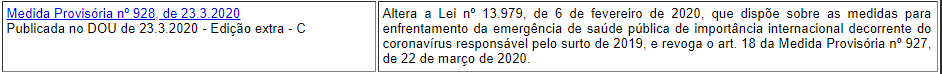
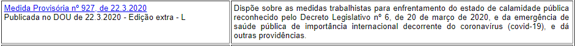
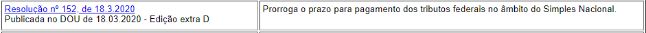

Importante!
Aqui vai uma dica: procure a sua rede bancária para tentar uma aprovação direta através do próprio banco ou com o BNDES, muitas vezes, o relacionamento pode agilizar o processo.
Confira abaixo o vídeo com passo a passo para obtenção de crédito do BNDES:
Clique nas Medidas e Resolução aprovadas e confira na íntegra:



Parcelamento da dívida ativa da união (PGFN)
Concede parcelamento dos débitos inscritos em dívida ativa. 1% da totalidade dos débitos inscritos ( em até 3X) e o restante em até 81 meses e até 142 meses para micro e pequenas empresas. Para débitos previdenciários, o parcelamento é de até 57 meses.
Suspensão temporária da dívida ativa da união (PGFN)
Suspende por 90 dias o prazo de impugnação e recursos , apresentação de manifestação de inconformidade, oferta antecipada de garantia em execução fiscal, apresentação e recurso de pedido de revisão da dívida inscrita, protesto de certidão de dívida ativa, instauração de novos procedimentos administrativos, exclusão de contribuintes de parcelamentos administrados pela PFGN por inadimplência de parcelas.
Vejam algumas medidas adicionais do Governo recentemente publicadas.
MP 927/22/03/2020 E MP 928/23/03/2020 - Resolução que aprova 7 medidas, a saber:
IV. teletrabalho;
II. a antecipação de férias individuais;
III. a concessão de férias coletivas;
IV. o aproveitamento e antecipação de feriados;
V. o banco de horas;
VI. a suspensão de exigências administrativas em segurança e saúde no trabalho;
VII. o diferimento do recolhimento do Fundo de Garantia do Tempo de Serviço – FGTS.
Como regra, as MPs devem ser apreciadas e aprovadas por outras instâncias em até 120 dias, caso contrário perdem sua validade.
A MP 944/20 institui linha de crédito para pagamento da folha de pagamento de até 02 (dois ) meses, limitado a 2X o salário mínimo por empregado. Poderá obter o crédito de empresas com faturamento anual entre R$360 à R$10 milhões em 2019.
Importante:
- O empregador deverá informar ao Ministério da Economia sobre a redução da jornada de trabalho e salário ou sobre a suspensão temporária do contrato de trabalho, no prazo de até 10 dias, contado da celebração do acordo. Considerando que nosso Acordo Coletivo é anterior à publicação da MP, a recomendação do Jurídico é que o prazo seja contado a partir da publicação da MP, ou seja, até 11/04/2020
- Na hipótese de acordo firmado diretamente entre empregador e empregado, o Sindicato Patronal (Empregados) deverá ser comunicado, em até 10 dias a contar da data de celebração do acordo
- As convenções ou acordos coletivos de trabalho celebrados anteriormente à MP poderão ser renegociados para adequação de seus termos, no prazo de 10 dias a contar da publicação da MP